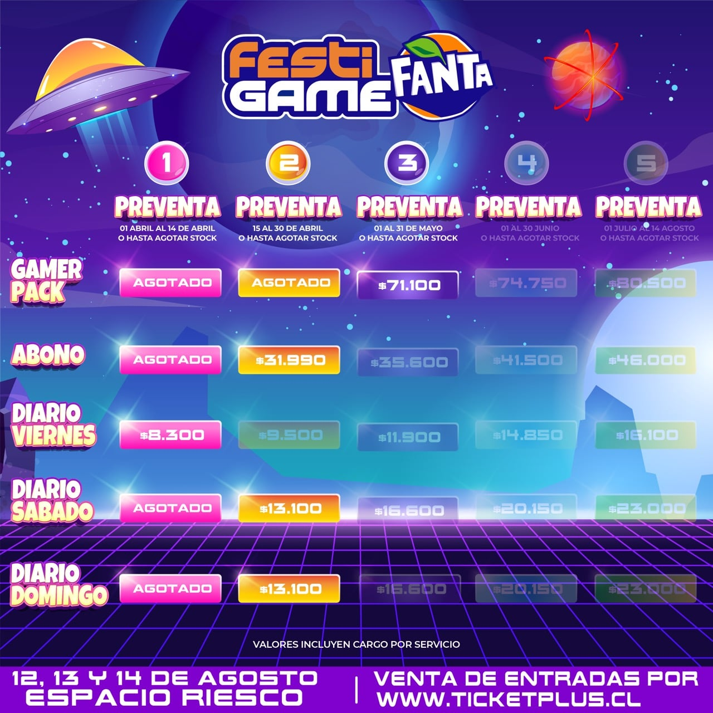

FestiGame 2022: ¿Cuál es el precio de las entradas?
Este año el FestiGame, volverá a su formato presencial luego de dos años de realización online producto de la pandemia. El festival de videojuegos, cultura gamer y entretención se realizará desde el viernes 12 al domingo 14 de agosto en el Espacio Riesco, ubicado en la comuna de Huechuraba, en la Región Metropolitana. En su aniversario número 10, el FestiGame tendrá stands y actividades de diversas marcas de la industria de los videojuegos, y contará con invitados locales e internacionales, desarrolladores, competencias de eSports, cosplay y cientos de videojuegos en más de 12.000 metros cuadrados.
El FestiGame 2022 tiene etapas de venta diferenciadas, que en esta oportunidad se dividen en: Primera Etapa Preventa: desde el 1 de abril al 14 de abril o hasta agotar stock. Segunda Etapa Preventa: desde el 15 de abril al 30 de abril o hasta agotar stock. Tercera Etapa Preventa: desde el 1 de mayo al 31 de mayo o hasta agotar stock. Cuarta Etapa Preventa: desde el 1 de junio al 30 de junio o hasta agotar stock. Venta Final: desde el 1 de julio hasta el 14 de agosto o hasta agotar stock. El precio de las entradas varía de acuerdo con la etapa de preventa, en detalle:

Cabe destacar que los niños de 0 a 5 años ingresan gratis y la entrada se paga a contar de los 6 años. Por otra parte, los menores que tengan desde 12 años en adelante, pueden ingresar al festival sin compañía de un adulto.